Contents
Zuna Facecap reads your expressions and head movement with the phone camera and sends them over Wi-Fi to PC apps that support iFacialMocap, the protocol those apps use for iPhone face tracking. No iPhone needed.
Want arms, fingers and a stream deck from the same phone? See Get more with Zuna Studio, available on request.
The short version: install the app → allow the camera → put the phone on a stand about 40 cm from your face → in your PC app choose the iFacialMocap tracker and type the phone address shown in the app → press Start tracking → calibrate once.
| Works with | Warudo, VSeeFace, VNyan and other apps that accept an iFacialMocap / iPhone tracker. Apps that read the VMC protocol are also supported (advanced). |
| Sends | 51 ARKit-style expression values + head rotation and position, UDP port 49983 |
| Privacy | Video is analyzed on the phone only. It is never recorded or uploaded. Only tracking numbers go to your PC over your own Wi-Fi. |
| Languages | English, 한국어, 日本語, 简体中文 (Settings → Language) |
| Contact | maxjang123@gmail.com · Settings → Help and contact |
1. Device requirements
| Minimum | Recommended | |
|---|---|---|
| Android | Android 10 or newer | Android 13 or newer |
| Processor | 64-bit (ARM64). 32-bit-only phones cannot install the app. | A phone from about 2021 or later with a mid-range or better chip |
| Memory | 4 GB RAM | 6 GB RAM or more |
| Camera | Front or back camera | Front camera, or back wide (ultra-wide) for upper body |
| Network | Phone and PC on the same Wi-Fi / router | 5 GHz Wi-Fi, PC on cable or 5 GHz |
| Extras | — | A phone stand or tripod, a charger for long streams |
The app is developed and tested on a Galaxy S24 Ultra (Android 16): about 40 fps face tracking at the 60 fps camera setting. Older or entry-level phones work but track at a lower frame rate. If tracking feels slow, turn off Upper body, Hands and 60 fps tracking.
The app shows your phone's Android version and memory under Settings → Help and contact → Device requirements, and warns you if memory is low.
Why 64-bit only?
The face, body and hand models run on Google MediaPipe. Shipping its native libraries for old 32-bit phones would make the app more than twice as large, and those phones are too slow for smooth tracking anyway.
2. Install
- Install Zuna Facecap (Google Play, or the APK you were given).
- Open it. The first-run guide starts on its own.
If you install the APK directly, Android may ask you to allow installs from your browser or file manager. That is a one-time Android setting.
3. First run
A five-step guide opens the first time. You can Skip it, and open it again any time from Settings → Help and contact → Show the getting-started guide again.
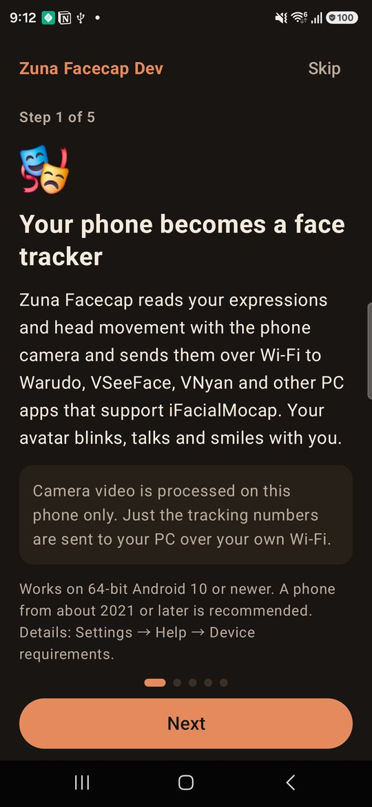
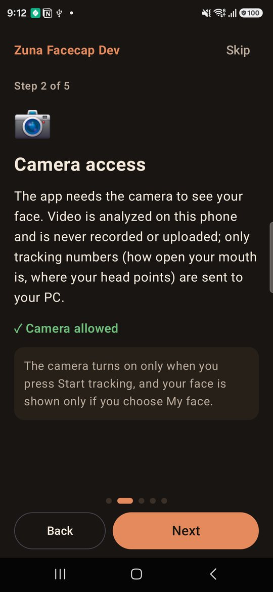
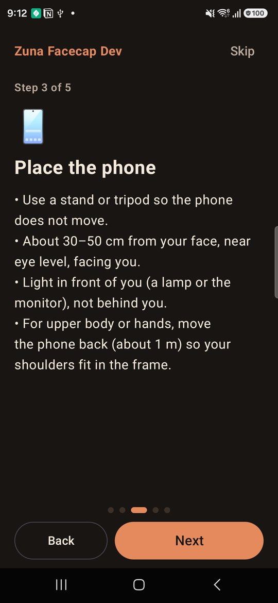
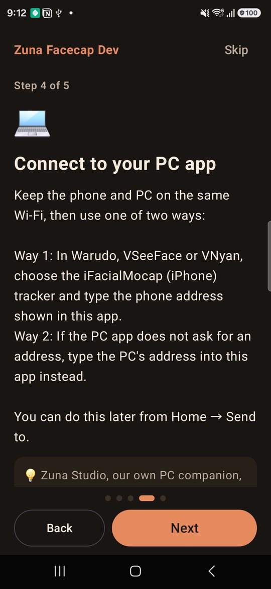
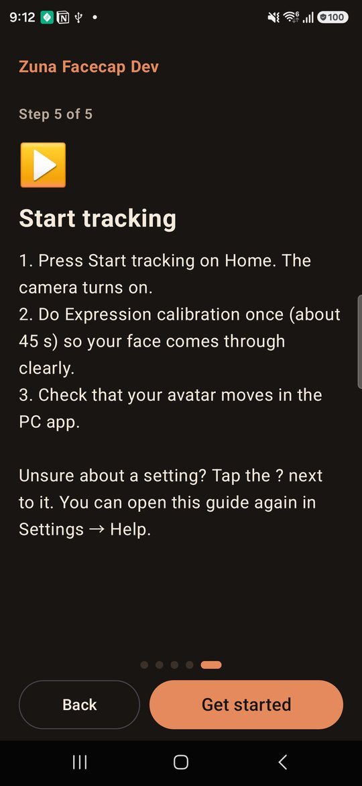
Placing the phone
- Put it on a stand or tripod so it does not move.
- About 30–50 cm from your face, near eye level, facing you.
- Light in front of you (a desk lamp or the monitor), not behind you.
- For upper body or hands, move the phone back to about 1 m so your shoulders fit in the frame.
The camera turns on only when you press Start tracking. Home shows a character that copies your face; switch to My face at the top right to see the camera with tracking points.

4. Connect to Warudo, VSeeFace or VNyan
Keep the phone and the PC on the same Wi-Fi. Then on Home tap Send to and keep PC apps (iFacialMocap) selected (it is the default).
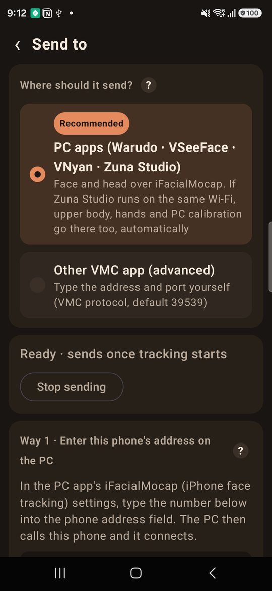
There are two ways to connect. Use one of them, not both.
| Way 1 · type the phone address on the PC | Way 2 · type the PC address on the phone | |
|---|---|---|
| When | The PC app asks for the phone's IP address (VSeeFace, VNyan, Warudo) | The PC app only listens and does not ask (some Warudo setups, other apps) |
| Where | In the PC app | In Zuna Facecap → Send to → PC address |
| What to type | The big number under This phone, e.g. 192.168.0.178 | The PC's IPv4 address, e.g. 192.168.0.217 |
| Port | 49983 (fixed) | 49983 (fixed) |

Every item with a ? opens a short explanation. Tap it whenever a setting is unclear.
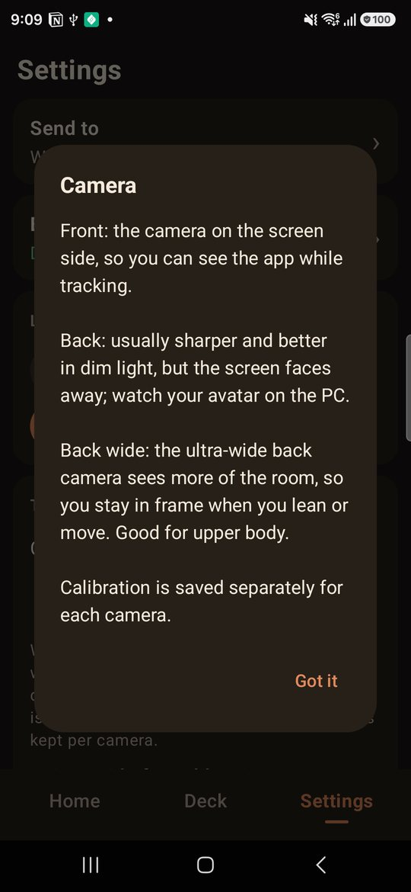
Warudo
- In Warudo, open the Setup for your character and choose iFacialMocap as the face tracking source (the iPhone / iFacialMocap option).
- Enter the phone address shown in Zuna Facecap (Way 1). If Warudo does not ask for an address, use Way 2 and type the PC's address into the app.
- Press Start tracking on the phone.
VSeeFace
- General settings → iPhone/ARKit face tracking: turn on iFacialMocap (Receive tracking data from iFacialMocap).
- Type the phone address from Zuna Facecap into the IP field and connect.
- Press Start tracking on the phone. In VSeeFace, set the webcam to None if you only want phone tracking.
VNyan
- Settings → Tracking → ARKit / iPhone tracking: choose iFacialMocap.
- Enter the phone address from Zuna Facecap and start receiving.
- Press Start tracking on the phone.
Menu names change between versions of these apps. Look for “iFacialMocap” or “iPhone tracking”; the steps are the same.
How do I find my PC's address (for Way 2)?
- Press Win + R, type
cmd, press Enter. - Type
ipconfigand press Enter. - Under the adapter you use (Wi-Fi or Ethernet), copy IPv4 Address, for example
192.168.0.217.
This is your home-network address, not your internet address.
Other VMC app (advanced)
Some programs read the VMC protocol instead of iFacialMocap. Choose Other VMC app under Send to, type the receiving PC's address and port (often 39539), and turn on Capitalized names if the app expects Perfect Sync names such as EyeBlinkLeft. Only the face and head are sent this way.
5. Calibrate
Everyone's resting face is different, and trackers rarely read exactly 0 at rest or 100 at full. Expression calibration measures your resting face and how far each expression goes, so your avatar's mouth closes when yours does and smiles all the way.
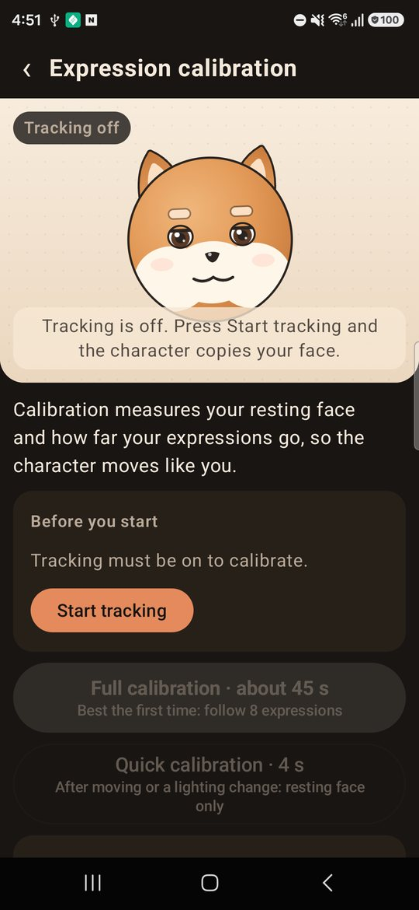
| Takes | When | |
|---|---|---|
| Full calibration | about 45 s, 8 expressions | Once, the first time |
| Quick calibration | 4 s, resting face only | After moving the phone or changing the lighting |
| Head angle calibration (optional) | about 15 s | When the phone sits below or above your face |
| Body posture (optional) | 4 s | With Upper body on, when the phone sits off to the side |
Calibration is saved per camera and backed up to Download/ZunaFacecap/zuna-facecap-calibration.json. After reinstalling or moving to a new phone, use Load calibration instead of calibrating again.
6. Settings explained
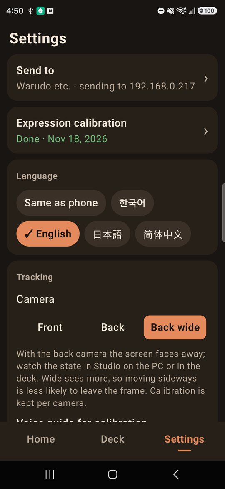
| Setting | What it does | Tip |
|---|---|---|
| Camera: Front / Back / Back wide | Which camera tracks you | Front lets you see the app. Back is often sharper. Back wide (ultra-wide) keeps you in frame when you lean. |
| Voice guide for calibration | Reads calibration steps aloud | Useful with the back camera, when you cannot see the screen |
| Upper body | Tracks shoulders and arms | Zuna Studio only. Move the phone ~1 m away. |
| Hands | Tracks fingers | Zuna Studio only. Lowers the frame rate a little. |
| 60 fps tracking | Faster camera | Smoother, more heat and battery |
| Start tracking when the app opens | Skips pressing Start | Off by default |
| Keep tracking with the screen off | Tracking continues in the background | A notification stays while it runs. Charge the phone. |
| Wink correction | Keeps a wink a wink | On by default |
| Block jumps | Drops impossible one-frame snaps of the head or face | Real fast moves still arrive, one frame (~0.02 s) later |
| Reverse left and right | Swaps sides | Only if your PC app shows the sides reversed |
| Recording | Saves expression values as JSON (no video) | For testing |
| Diagnostics | fps, delay, processor, battery, heat | Check here first when something feels slow |
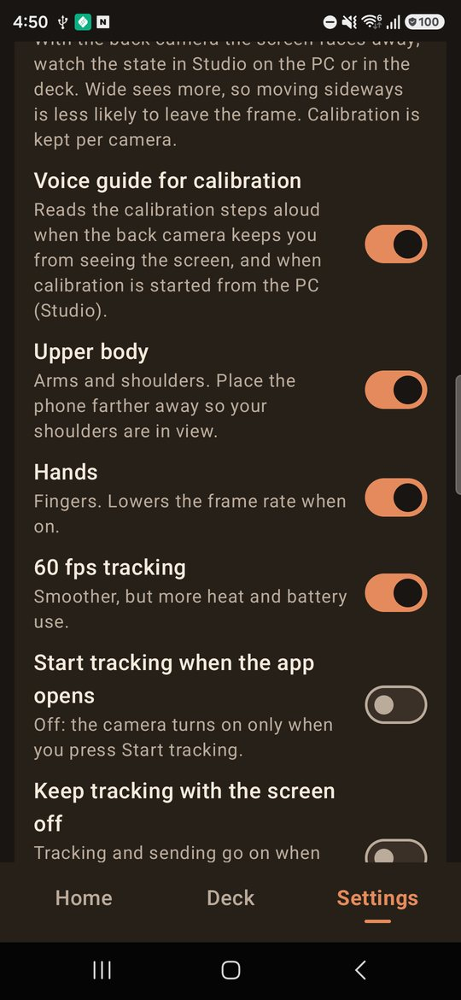
7. Get more with Zuna Studio
Zuna Studio is our Windows companion app, made for Zuna Facecap. Face tracking for Warudo, VSeeFace and VNyan works without it. With Studio, the same phone drives much more of your avatar, and you can run your whole stream from your phone.
Interested? Zuna Studio is available on request. Ask about Zuna Studio and we will get back to you.
Why Zuna Studio?
What reaches your PC from one phone:
| Phone → Warudo / VSeeFace / VNyan | Phone → Zuna Studio | |
|---|---|---|
| Face and head | ✓ | ✓ |
| Shoulders and arms | — (needs another tracker) | ✓ same phone |
| Fingers | — (needs another tracker) | ✓ same phone |
| Calibration started from the PC, with the phone's voice guide | — | ✓ |
| Stream deck on your phone or tablet | — | ✓ |
| Only your phone can move your avatar (phone registration) | — | ✓ |
What Studio adds
| Tracking | Avatar |
|---|---|
|
|
| Stream | Peace of mind |
|
|
 The deck on a phone (Deck tab) |
|
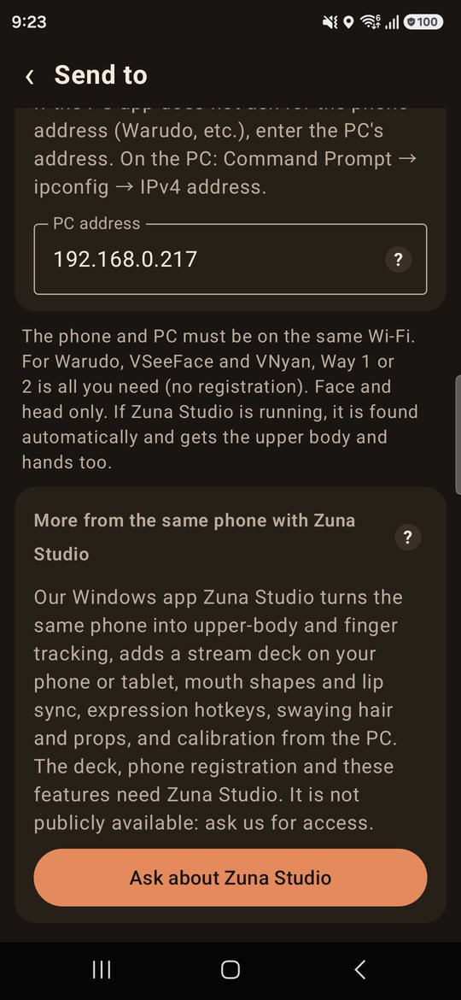 In the app: what Studio adds, with an Ask button |
 The first time, allow the phone on the PC (4-digit code; Japanese UI shown) |
Who it is for
- VTubers who want arms and hands without buying a second tracker
- Streamers who want to control OBS and music from the phone next to them
- Creators and teams looking for a custom setup or a partnership
How to get Zuna Studio
Zuna Studio is not publicly distributed. Ask us and we will reply by email.
- In the app: Settings → Help and contact → Business inquiry, or the Ask about Zuna Studio button (Send to screen, Deck tab, Settings). Your mail app opens with a short template.
- Or email maxjang123@gmail.com.
We build a dedicated Zuna Studio for your avatar: your model is set up inside Studio (expressions mapped to the tracking, upper body and fingers, camera presets, deck), and you receive your own Windows app. It is made for you only and is not shared with anyone else.
What to send us
| What we need | Why | |
|---|---|---|
| 1. Avatar files | One of: a VRChat avatar Unity project or .unitypackage (Humanoid prefab with its materials and textures) · an FBX with textures (Humanoid rig) · a VRM file (0.x or 1.0) | Your avatar is built into the app. Studio moves Humanoid bones and shape keys |
| 2. Shape keys | Which expression shape keys the model has: ARKit / Perfect Sync (best), VRChat visemes (vrc.v_aa…), VRM or MMD expressions, or none | They are matched automatically. Without them we use blink, vowels and the jaw bone |
| 3. Shader | The shader and its version (e.g. lilToon 2.x, Poiyomi) | Studio runs on Unity 6 (URP). Some shaders need a compatible version to look the same |
| 4. License | The model's terms of use or store page (e.g. BOOTH), and confirmation that you may use it for streaming and modify it | The model is placed inside your app. We only build what the license allows |
| 5. Extras (optional) | Expression and hand-gesture animations, outfit toggles and props, physics bones (PhysBone etc.) | For expression hotkeys, outfit props and swaying hair. Physics are converted where possible |
| 6. Your setup | Phone model and Android version · Windows 10/11 PC (64-bit) with a DirectX 12 graphics card · OBS Studio with the Spout2 plugin | Studio sends a transparent image to OBS over Spout2 |
| 7. Your stream (optional) | OBS scene names, background images, background music by mood, camera framings you like | So the deck and stage are ready on day one |
Send the files by a download link (Google Drive, Dropbox…), not as mail attachments. Do not send passwords.
Why can't I just load my avatar into a ready-made app?
FBX and VRChat avatars are converted by the Unity editor (materials, shaders, Humanoid setup); a finished Windows app cannot do that on its own. So we prepare your avatar in Unity and build Studio with it. A version that loads VRM files by itself is planned, but not available yet.
How the deck connects
- On the PC, start Zuna Deck or Zuna Studio.
- Keep the phone and the PC on the same Wi-Fi.
- If Windows Firewall asks, allow Private networks.
- The first time, the PC shows a 4-digit number. Allow it there if it matches the phone.
A tablet or a second phone can open the same deck in a browser.
8. Troubleshooting
First check: is Tracking green on Home, and does Send to say sending?
The avatar does not move at all
- Phone and PC on the same Wi-Fi? Guest networks and some mesh routers block devices from seeing each other.
- Did you press Start tracking on the phone?
- Way 1: is the number in the PC app exactly the one under This phone? It can change when the phone reconnects to Wi-Fi.
- Way 2: is the PC address correct (
ipconfig→ IPv4)? - Windows Firewall: the PC app must be allowed on Private networks. Make sure your Wi-Fi is set as a Private network in Windows.
- VPN on the phone or PC? Turn it off and try again.
- Android 17: allow Nearby devices when the app asks (Settings → Apps → Zuna Facecap → Permissions).
“No face” or the face keeps getting lost
- Add light in front of you. A dark room is the most common cause.
- Keep the phone 30–50 cm away and facing you.
- Try the other camera (Settings → Camera).
The mouth stays slightly open or expressions are weak
Run Full calibration. If you moved the phone or the lighting changed, run Quick calibration. If the phone is below your face, also try Head angle calibration.
Left and right are swapped
Turn on Settings → Expression details → Reverse left and right. Normally Left means your own left.
Tracking is slow or the phone gets hot
- Turn off Upper body, Hands and 60 fps tracking.
- Remove a thick case and keep the phone out of direct sun.
- Check Settings → Diagnostics for Runs on (GPU is usually faster) and Heat.
Tracking stops when I switch apps or the screen turns off
Turn on Settings → Keep tracking with the screen off. Also exclude Zuna Facecap from battery optimization if your phone kills background apps.
9. FAQ
Do I need an iPhone or the iFacialMocap app?
No. Zuna Facecap speaks the same protocol on Android, so PC apps think it is iFacialMocap.
Is my camera video sent anywhere?
No. Video is analyzed on the phone only and never recorded or uploaded. Only tracking numbers are sent, and only to the PC you connect to.
Does it need the internet?
No. Tracking works over your local Wi-Fi. The internet is used only to check for app updates.
Does it track my body and hands in Warudo / VSeeFace / VNyan?
These apps receive the face and head over iFacialMocap. For upper body and fingers from the same phone, use Zuna Studio.
Can I use the back camera?
Yes: Settings → Camera → Back or Back wide. Turn on the voice guide so you can calibrate without seeing the screen.
Do I need Zuna Studio?
Not for Warudo, VSeeFace or VNyan. Studio gets more out of the same phone: upper body and fingers, a stream deck, mouth shapes and lip sync, props, and calibration from the PC. It is available on request: see How to get Zuna Studio.
10. Report a bug or contact us
Settings → Help and contact has two buttons:
| Button | Opens | What is filled in |
|---|---|---|
| Report a bug | Your mail app | Subject with app version and phone model; body with device, Android version, app version (versionCode) and language. You only write what happened. |
| Business inquiry | Your mail app | Subject and a short template for Zuna Studio access, partnerships and collaborations |
If no mail app is installed, the app shows the address with a Copy address button.
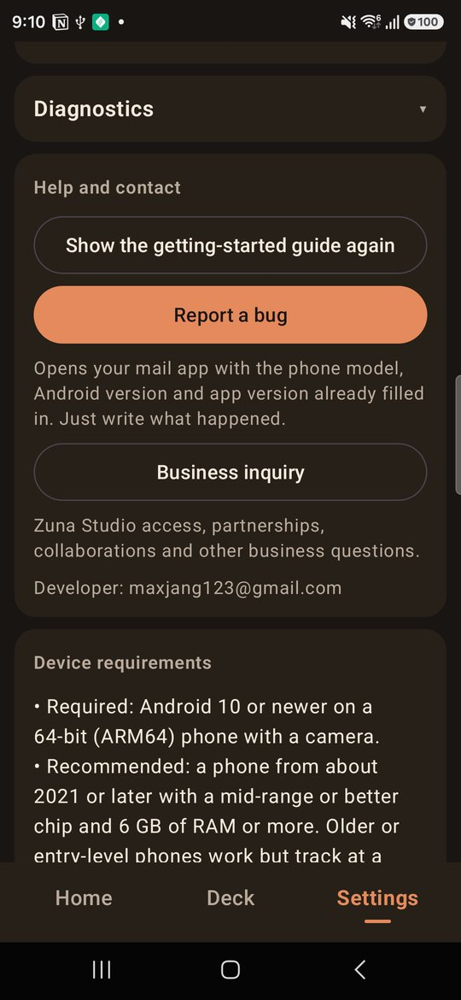
maxjang123@gmail.com